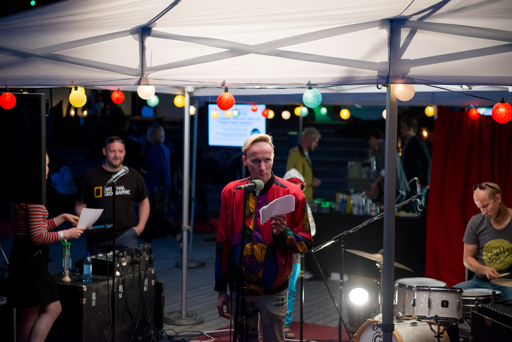

The term performance poetry originates from an early press release describing the 1980s performance poet Hedwig Gorski, whose audio recordings achieved success on spoken word radio programs around the world. Her band, East of Eden Band, was described as the most successful at music and poetry collaborations, allowing cassettes of her live radio broadcast recordings to stay in rotation with popular underground music recordings on some radio stations. Gorski, an art school graduate, tried to come up with a term that would distinguish her text-based vocal performances from performance art, especially the work of performance artists, such as Laurie Anderson, who worked with music at that time. Performance poets relied more on the rhetorical and philosophical expression in their poetics than performance artists, who arose from the visual art genres of painting and sculpture. The Austin Chronicle newspaper, printing Gorski's bi-weekly "Litera" column, first published the term "performance poetry" to describe the work of Gorski with composer D'Jalma Garnier III as early as 1982. She began using the term, however, to describe a 1978 "neo-verse drama" and "conceptual spoken poetry for five voices" titled Booby, Mama! that employs the cut-up method made popular by William Burroughs and conceptual art methods.
The National Endowment for the Arts categorized performance art within the visual arts judging panels; it originally placed performance poetry within the category of theater before correcting it to literature in the 21st century. Since many performance poets did not have publications, the former classification made performance poets categorically ineligible for the NEA fellowship funding or recognition. Their audio cassettes were not acceptable sample material for literature grant consideration. A stated objection to this presentation method protested their performance poems translated into text on paper could not compete with poetry written for print publication. The National Endowment for the Arts is now accepting varied presentations for publication verification for poetry fellowship applicants, including audio recordings that have no printed versions of the poems. Performance poetry with music peaked during the 1980s just as performance art peaked in the 1970s.
Read More